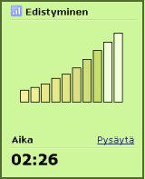

Kuinka mukautuva kesto toimii?
Tehdessäsi harjoituksia TypingMaster seuraa koko ajan edistymistäsi.
Kun kirjoittamisesi saavuttaa riittävän tarkkuuden ja sujuvuuden, neuvoo ohjelma sinua siirtymään eteenpäin säästäen näin harjoitteluun käytettyä aikaa.
Toisaalta, jos ohjelma huomaa tarvetta lisäharjoitukselle, antaa se sinun suorittaa harjoituksen koko pituudessaan.
Paremmat taidot aikaa säästäen
Mukautuvassa oppimisessa harjoittelu perustuu aina omaan edistymiseen. Näin vältyt tarpeettomalta harjoittelulta ja säästät huomattavasi aikaa. Taitoihisi ei myöskään jää heikkoja kohtia, sillä saat aina tarpeen vaatiessa yksilöllistä lisäharjoitusta.